|
- Evento: Lectura de la tesis de Juan González, titulada: "Robótica Modular y Locomoción: Aplicación a Robots Ápodos"
- Fecha: 21/Nov/2008
La lectura
Houxiang Zhang llegó a Madrid el Jueves 20 de Noviembre y se alojó en el Hotel Husa Chamartín. No pude ir a recogerle al aeropuerto porque estaba en clase. Terminé un poco antes y me fuí a buscarlo al hotel. No nos veíamos desde el año pasado, cuando vino a Madrid a conocer a mi hijo Juan. Me hizo mucha ilusión volver a estar con él.
Nos dirigimos a mi casa a buscar a mi mujer Mercedes. Estuvimos tomando un té. Yo ese día estaba muy nervioso: ¡Al día siguiente tenía la lectura de mi tesis!. Sin embargo el estar sentado con Houxiang, tomando un te y charlando, me tranquilizó mucho (foto de la izquierda). Cenamos, le acompañamos al hotel y a dormir.
Al día siguiente me levanté pronto, cogí todas mis cosas y me fuí a la Escuela. Recogí a Vicente Matellán y a Houxiang de la estación del Campus sobre las 9:45 y nos fuimos a tomar un café. A las 11h me fuí al aula 503 del Departamento de Geología de la Facultad de Ciencias, a preparar la sala para la lectura (foto de la derecha). Mercedes vino a echarme una mano.
| 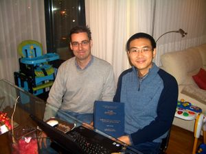
Dr. Houxiang Zhang y Juan González |
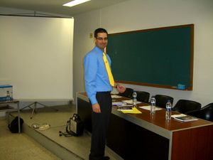
Juan González en los momentos previos a la lectura |


A las 12 del mediodía llegó la hora de la verdad. El tribunal ya había llegado y la lectura debía comenzar. Comencé mi exposición, en inglés, con una mezcla de nerviosismo y extrañeza por aquello de estar hablando en una lengua diferente de la materna (foto de la izquierda). En la foto de la derecha se puede ver a todos los miembros del tribunal. De izquierda a derecha: Dr. Jose María Cañas, Dra. Cristina Urdiales, Dr. Vicente Matellán, Dr. Houxiang Zhang, y Dr. Miguel Ángel García
| 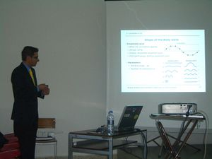
Juan González, durante la exposición |
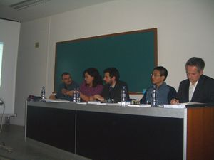
Los miembros del tribunal. De izquierda a derecha: Dr. Jose María Cañas, Dra. Cristina Urdiales, Dr. Vicente Matellán, Dr. Houxiang Zhang y Dr. Miguel Ángel García |


Terminó mi exposición (qué peso me quité de encima) y comenzaron las preguntas. Primero preguntó Houxiang en Inglés y luego el resto de miembros del tribunal en castellano. La cosa fue mucho mejor de lo esperado. Muchas de las preguntas eran en realidad aclaraciones de partes que no se había entendido bien. Todos me felicitaron por el trabajo.
Tras las deliberaciones, Vicente Matellán me comunicó que había obtenido la máxima calificación. En ese instante lo primero que pensé fue: "Ya está, se acabó. Todos estos años de trabajo y sufrimiento han llegado a su fin". Casi se me saltaron las lágrimas, pero logré aguantar ;-)
En la foto de la izquierda el Tribunal me está felicitando y en la derecha estoy firmando las actas. Oficialmente ya era el Doctor Juan González :-D
| 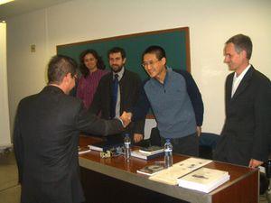
Los miembros del tribunal felicitando al nuevo doctor ;-) |
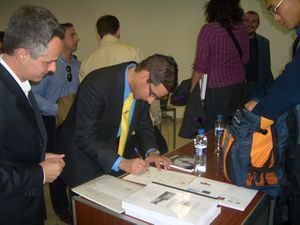
El Dr. Juan González firmando las actas |


Era el momento de las felicitaciones y las celebraciones. En la foto de la izquierda estoy con mi mujer Mercedes y con Houxiang . En la derecha estamos Xavier de Blas y yo. Me hizo mucha ilusión que Xavi estuviese en mi tesis. Vino expresamente de Barcelona para asistir a la lectura. No nos veíamos desde la iparty9 de Castellón.
| 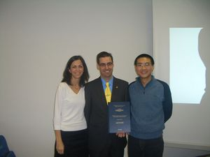
Mercedes Hernández, Juan González y Houxiang Zhang |
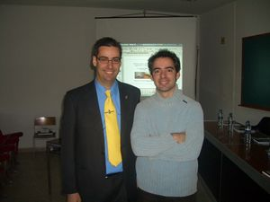
Xavier de Blas y Juan González |


También asistieron Andrés Prieto-Moreno, Alejandro Alonso y Ricardo Gómez.
| 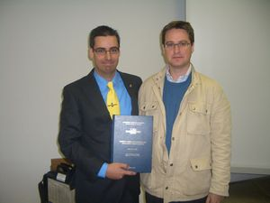
Andrés Prieto-Moreno y Juan González |
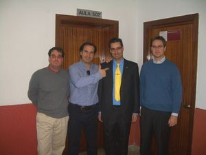
De izquierda a derecha: Ricardo Gómez, Alejandro Alonso, Juan González y Andrés Prieto-Moreno |


Chris vino a la lectura desde Málaga. Es socio de A.R.D.E y sólo nos conociamos virtualmente. Me hizo también mucha ilusión que estuviese allí, aunque casi no tuvimos tiempo para hablar. Los capítulos de mi tesis los fui publicando a medida que los iba escribiendo. Quería que la gente los echase un vistazo para ir eliminado las erratas, frases sin sentido, incluir sugerencias, etc. Mi sorpresa fue que no recibí ninguna realimentación salvo las sugerencias de Chris. Por ello estoy muy agradecido.
En la foto de la izquierda estoy junto a Chris y Juan José Dominguez, otro miembro de A.R.D.E que vino con Chris. En la foto de la derecha están Bas Huiszoon y Eduardo Boemo, mi director de la tesis.


Con los nervios de la lectura, no sé bien cuántas personas vinieron. Entre los asistentes estaban Angel de Castro, Jose Alberto Hernández, Sergio López-Buedo, Walter Fuertes …
Mini-Workshop on Robotics
Sobre las 15h nos fuimos a comer los miembros del tribunal, mi director y yo al club de tiro que se encuentra en el mismo campus de la Universidad Autónoma. Aprovechando que Houxiang venía, había organizado un mini-workshop sobre robótica para que diferentes conferenciantes nos contasen sus últimas investigaciones en robótica.
El primero fue Fernando Herrero Carrón, estudiante de doctorado del grupo de Neurocomputación biológica (GNB) de la Universidad Autónoma de Madrid. Nos dió una breve introducción a los CPGs (Central Pattern Generators) y nos hizo demostraciones de su aplicación para la locomoción de un robot ápodo.
| 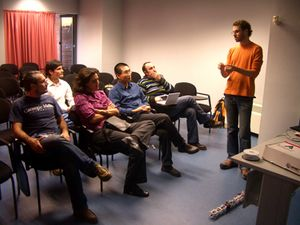
Fernando Herrero Carrón |
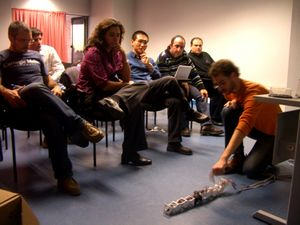
Fernando Herrero Carrón mostrando haciendo una demostración de un robot ápodo |


A continuación, Pablo Varona, profesor del GNB, nos explicó en detalle los modelos de CPG's (foto de la izquierda). El siguiente ponente fué Houxiang. Nos habló sobre los diferentes tipos de robots escaladores, de sus problemas y la nueva propuesta de diseño de una oruga trepadora (Foto de la derecha).
| 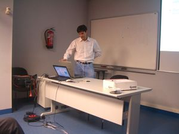
Pablo Varona, profesor del GNB |
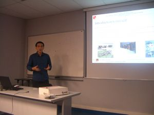
Houxiang Zhang, de la Universad de Hamburgo |


En la última exposición, Jose María Cañas nos describió brevemente el entorno software abierto que están realizando en la Universidad Rey Juan Carlos para la programación de comportamientos en robots (JDE). Es un software en el que estoy especialmente interesado por varios motivos: 1) Es software libre. 2) Quiero utilizarlo para implementar comportamientos en los robots modulares.
Finalmente, Pablo Varona nos enseñó su laboratorio y los equipos que tienen para ver las neuronas de los animales e interactuar con ellas.
| 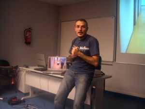
Jose María Cañas, de la Universidad Rey Juan Carlos de Madrid |
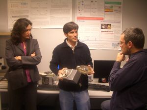
Cristina Urdiales, Pablo Varona y Jose María Cañas |


Celebración
Tras un largo día, llegó el momento de la celebración. Me llevé a Houxiang a cenar con mis primos y que pudiese degustar típicas tapas españolas ;-) (Foto de la izquierda)
El sábado, estuvimos en casa de mis padres, donde se había a quedado a dormir mi hijo Juan. En la foto de la derecha está Houxiang con mi pequeño padawan.
| 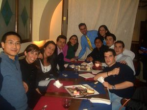
Celebrando la lectura de la Tesis |
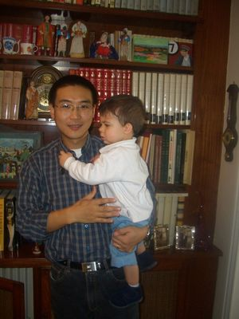
Houxiang con el pequeño Juan |


Por la tarde, Mercedes, Virginia y yo nos llevamos a Houxiang a hacer un poco de Shopping. Estuvimos en Zara para que le comprase un regalo a su mujer (Yanran).
Por la noche me lo llevé al estadio Bernabeu a ver el partido Real Madrid-Recretivo de Huelva. El campo estaba casi totalmente lleno, pero el partido fue muy malo.


El domigno a las 14:00, Houxiang tomó el avión de vuelta a Hamburgo. Espero poder hacerle una visita a lo largo del 2009.